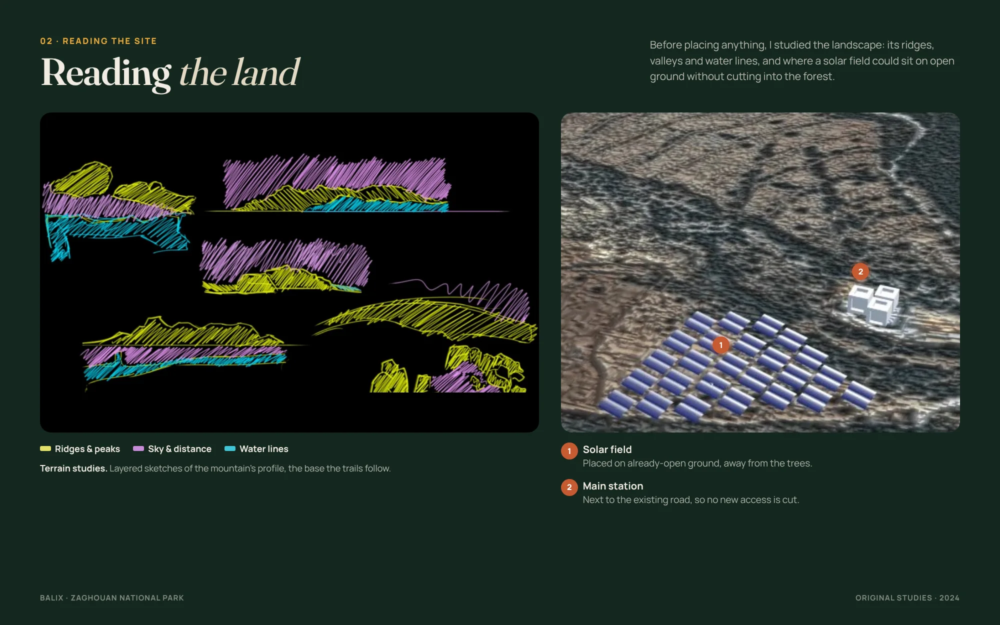
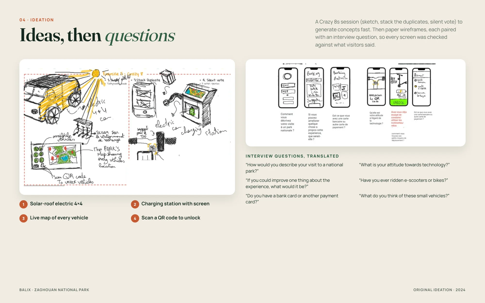
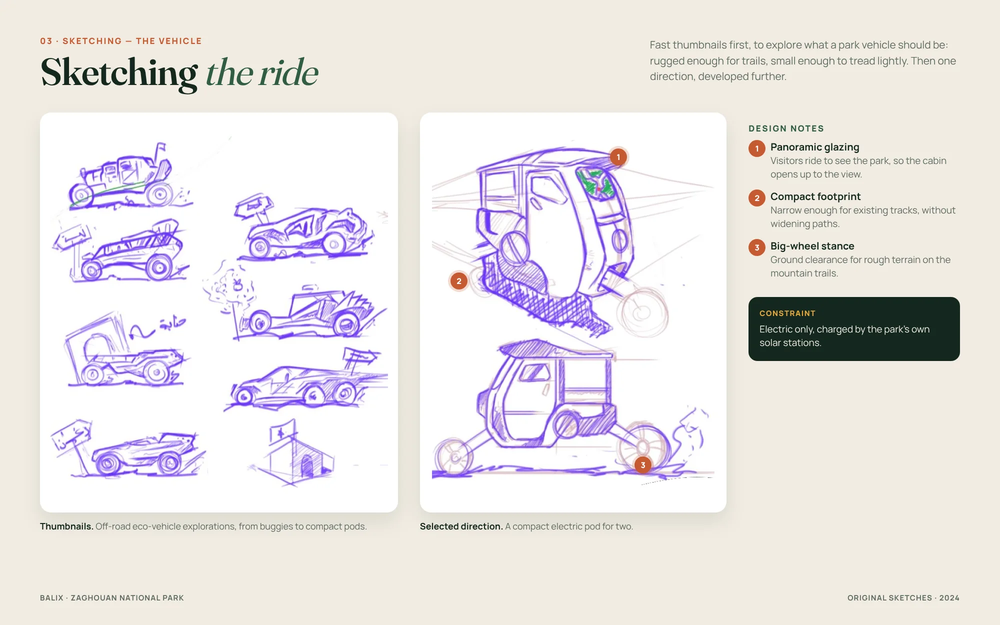
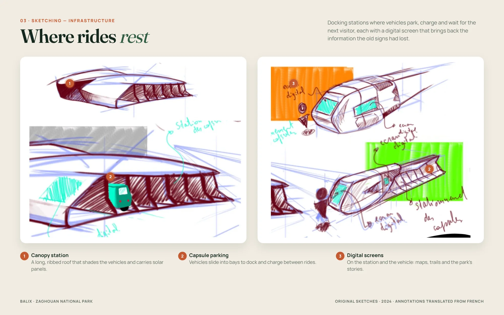
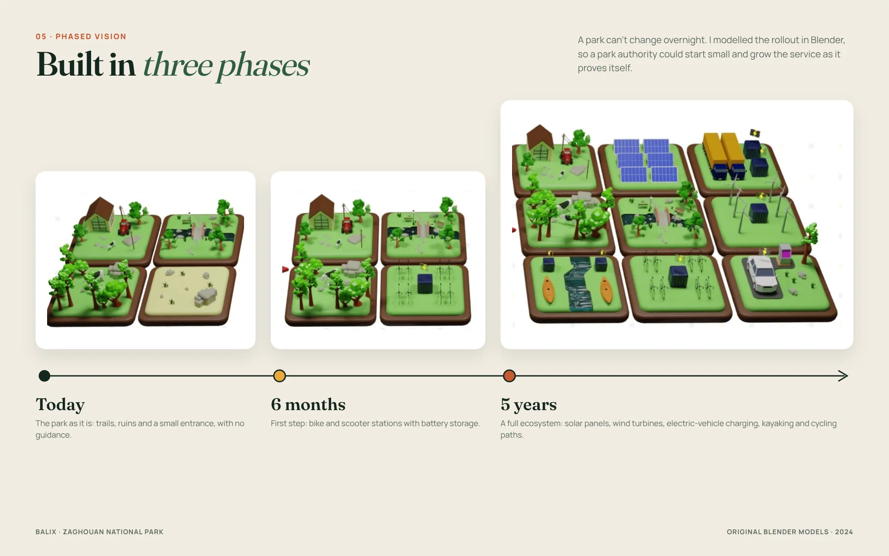
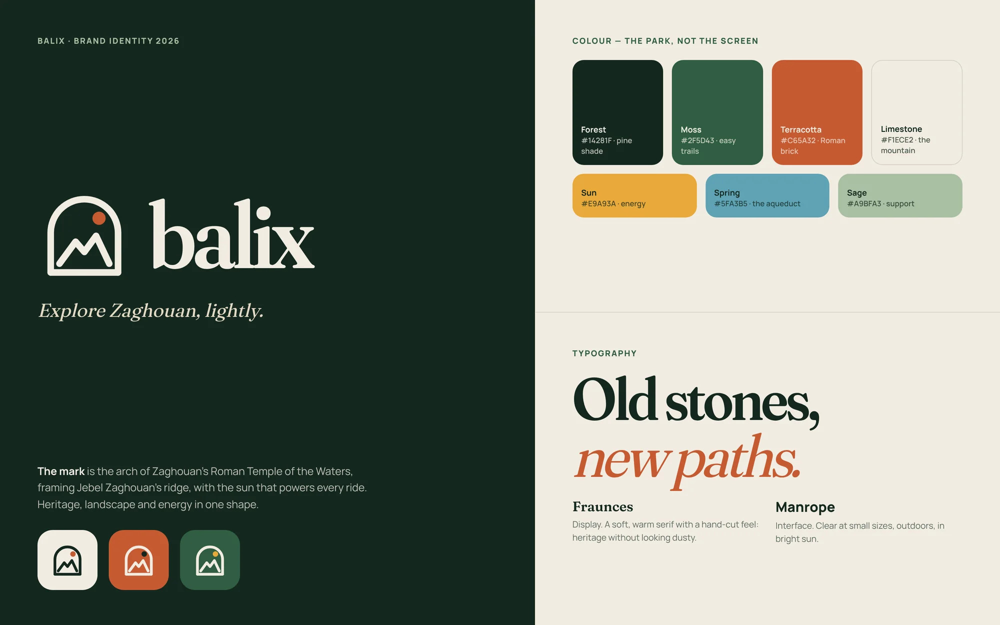
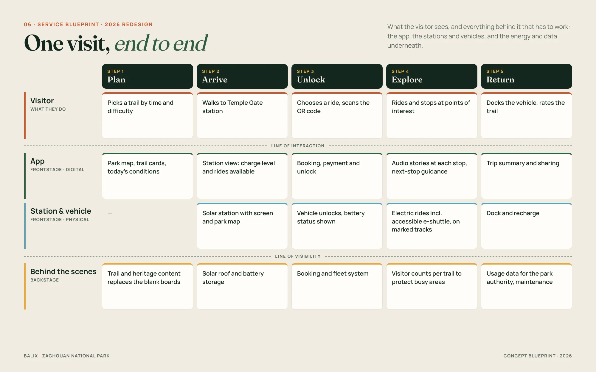

A park with everything.
Information with nothing.
Zaghouan sits at the foot of a mountain, next to a Roman water temple and the start of an aqueduct that once carried water to Carthage. It has trails, rare plants and history most Tunisians have never really seen. The project brief, set around the UN Sustainable Development Goals, asked how design could help people discover their own natural resources sustainably.
I didn't read about the problem. I went there.


information points I photographed that were blank, faded or torn
of Roman aqueduct starting here — a story visitors can't read on site
trail markers, path guides or digital tools for visitors
People come for the view and leave without knowing what they walked past — the history, the plants, the paths they never took.
Listening to visitors
I talked with local visitors in the park about how they experience it. What I heard, and what I saw myself, pointed to three gaps:
- Nobody knows where to go — there are no marked paths, distances or difficulty levels.
- Nobody knows what they're looking at — the history and nature have no voice on site.
- Exploring further is hard — the park is big, and there's no sustainable way to get around it.
How might we create a unique experience in national parks by connecting nature and technology — and making these spaces benefit — without damaging what makes them special?
My constraint from day one: whatever I added had to feel like part of the park, not something placed on top of it. Tunisia's strongest resources — sun and wind — would power the experience.
Reading the land
before placing anything
Layered terrain sketches of the mountain's ridges, valleys and water lines — the base the trails follow — and an aerial study of where a solar field and station could sit on open ground, next to the existing road, without cutting into the forest.

From observations
to concepts
A structured Crazy 8s session — sketch, stack the duplicates, silent vote — then paper wireframes, each paired with an interview question, so every screen was checked against what visitors told me.

Three directions came out of it: eco-vehicles to explore further, renewable infrastructure to power them, and a companion app to guide and organise visitors. They only work together — so BALIX became one connected service.
Designing the vehicle
and where it rests
My product design background let me go beyond the app: fast thumbnails to explore what a park vehicle should be, one direction developed further, and the docking stations where vehicles park, charge and share the park's stories on digital screens.


Designed for today
and for five years from now
A park can't be transformed overnight. I modelled the rollout in Blender: today's park, a six-month first step with bike and scooter stations and battery storage, and a five-year ecosystem with solar panels, wind turbines, electric-vehicle charging, kayaking and cycling.

Two years later,
I redesigned it.
The research and the service held up. The interface didn't: a futuristic car, neon green on black and generic map screens said "tech product", not "national park". In 2026 I rebuilt the brand and the app on top of the original research — the sketches, studies and models above stay exactly as I made them in 2024.

What changed
- From tech to place — colours, type and imagery now come from Zaghouan itself.
- From booking to guiding — the app's core moment is now the on-trail story, the job the blank boards failed to do.
- From one user to everyone — an accessible e-shuttle and audio guides for people who can't walk the steep trails.

The park's
missing guide
Six screens, one visit — from choosing a trail to finishing it. Built for outdoor use: high contrast, large type and buttons, and trails sorted by time and difficulty before anyone sets off.


2026 redesign. Historical facts are real; prices, names and battery levels are realistic placeholders.
One visit,
end to end.
BALIX isn't an app with a park around it. This blueprint maps the five steps of a visit across what the visitor does, the app, the stations and vehicles, and the energy and data behind them — the parts a park authority would actually have to build.

The thinking behind
the choices
Why design a vehicle and infrastructure, not just an app?
Why make renewable energy the core constraint?
Why paths with time and difficulty?
Why redesign it two years later?
Why make the on-trail guide the core screen?
Why a phased plan?
What I learned
Research starts outside
The most valuable hours were spent walking the park with a camera. Being physically there showed me problems no desk research would have surfaced.
Systems over screens
BALIX only made sense as a service: vehicle, energy, stations and app working together.
Sustainability as a constraint
Making it a rule, not a feature, led to better and more honest decisions throughout.
Next time
I'd test the redesigned flow with visitors on site — especially the on-trail guide and the accessible shuttle booking — and measure whether people visit more of the park.